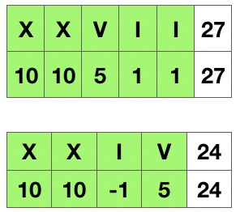

题目描述
罗马数字包含以下七种字符: I， V， X， L，C，D 和 M。1
2
3
4
5
6
7
8字符 数值
I 1
V 5
X 10
L 50
C 100
D 500
M 1000
例如， 罗马数字 2 写做 II ，即为两个并列的 1。12 写做 XII ，即为 X + II 。 27 写做 XXVII, 即为 XX + V + II 。通常情况下，罗马数字中小的数字在大的数字的右边。但也存在特例，例如 4 不写做 IIII，而是 IV。数字 1 在数字 5 的左边，所表示的数等于大数 5 减小数 1 得到的数值 4 。同样地，数字 9 表示为 IX。这个特殊的规则只适用于以下六种情况：
- I 可以放在 V (5) 和 X (10) 的左边，来表示 4 和 9。
- X 可以放在 L (50) 和 C (100) 的左边，来表示 40 和 90。
- C 可以放在 D (500) 和 M (1000) 的左边，来表示 400 和 900。
给定一个罗马数字，将其转换成整数。输入确保在 1 到 3999 的范围内。
示例 1:
输入: “III”
输出: 3
示例 2:
输入: “IV”
输出: 4
示例 3:
输入: “IX”
输出: 9
示例 4:
输入: “LVIII”
输出: 58
解释: L = 50, V= 5, III = 3.
示例 5:
输入: “MCMXCIV”
输出: 1994
解释: M = 1000, CM = 900, XC = 90, IV = 4.
题解
针对题目的对应关系我们首先构建一个Map，将罗马数字与整数的对应关系建立起来。根据题意，我们只需要将罗马字符一个一个转换成整数相加就行了。对于特例情况，当小数在大数的左边的时候，原本相加的操作，要变成相减操作。代码实现上，我们在处理当前数的时候，同时获取后面的一位数，如果大于当前数，则当前操作为减去当前的数，否则为加上当前的数。

1 | public int romanToInt(String s) { |
来源
文章标题：罗马数字转整数
文章作者：cylong
文章链接：http://www.cylong.com/blog/2019/11/07/roman-to-integer/
有问题或者建议欢迎在下方评论。欢迎转载、引用，但希望标明出处，感激不尽(●’◡’●)